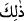
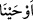
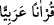

Burada “ kelimesi “nın masdarına işârettir. Kâf mef’ûl-i mutlak olmak üzere
mahallen mansubdur. “ ifâdesi ise “ fiilinin mef’uludur. Bu terkibe göre
mânâ şöyledir. İşte böyle güzel açık ve anlaşılabilir bir şekilde sana öyle bir vahyettik
ki artık bunda sana ve kavmine dâir bir belirsizlik yoktur.
Kâşifî şöyle demiştir: “Nitekim her peygambere kendi kavminin dilinde vahyettik.
Sana da kavmin anlayabilsin diye Arapça bir Kur’ân vahyettik.”
Araplar her şeyin aslına “üm” (ana) derler. Mekke, Kâbe-i Muazzama’yı ve Makàm-ı
İbrâhim’i içinde bulundurduğundan bu mübârek şehri şereflendirmek ve onun yüceliğini
ifâde etmek için ona “Ümmü’l-Kurâ (Şehirlerin anası)” denmiştir. Ayrıca dünyanın,
Mekke’nin üzerine kurulduğu yerin altından yarılıp yuvarlatıldığı rivâyet edilmektedir.
Diğer ülke ve şehirler Mekke’ye nisbetle ana-kız mesabesindedir.
“Ve Mekke’nin çevresinde bulunanları uyarman” yani Arapları uyarman için.
Mekkenin çevresinde bulunanları da “Araplar” olarak açıklamak, Peygamberimiz
(s.a.)’in risâletinin cihânşumûl oluşuyla çelişmez. Çünkü bir şeyin özel olarak
zikredilmesi, zikredilenden başkasının hükmüyle çelişmez. “Mekke’nin çevresinde
olan” ifâdesi bütün yeryüzü ve dünya halkı olarak da yorumlanmıştır. Bağavî âyeti
böyle tefsir etmiş ve Mekke’nin çevresini tüm dünya ülkeleri olarak açıklamıştır.
Kuşeyrî de aynı şekilde tefsir etmiş şöyle demiştir: “Tüm dünya Kâbe ve Mekke’yi
çevrelemiştir. Çünkü Kâbe ve Mekke, dünyanın ekvator bölgesi ve tam ortasıdır.
Bütün şehirlerin halkları onun etrafındadırlar.
et-Te’vîlâtü’n-Necmiyye’de şöyle denmektedir: Burada Allah Teâlâ Peygamberimiz
(s.a.)’in nefsine[64] bir uyarı olduğuna işâret etmektedir. Çünkü Peygamberimiz’in nefs-i
Âdem’in ve evladının nefislerinin ülkelerinin anasıdır. Ana şehri ve ana merkezidir.
Zîrâ Allah Teâlâ da kudret eliyle her şeyden önce Peygamberimiz (s.a.)’i yaratmıştır.
Peygamberimiz (s.a.): “Allah ilk olarak benim ruhumu yaratmıştır”[65] buyurmaktadır.
Diğer ruh ve nefisler bu ilk ruhtan neşet etmişlerdir. İşte bu mânâda Peygamberimiz
(s.a.) şöyle buyurmuştur: “Adem (a.s.) ve diğer tüm peygamberler, kıyâmette benim
sancağımın altında olacaklardır.”[66]
Buna göre âyetin mânâsı şudur: Azîz ve Hakîm olan Allah sana ve senden öncekilere
ümmetlerini uyarmaları için vahyettiği gibi aynı şekilde sana Arapça bir Kur’an
vahyetti ki, işte bu Arapça Kur’an’la sen aynı zamanda kendi nefsini ve zâtını uyarasın.
Zîrâ sen Arap milletindensin. Ve senin çevrende bulunan dünya halklarını da
uyarmalısın. Zîrâ dünya halkı hep senin etrafında toplanmış durumdadır. Allah Teâlâ
şöyle buyuruyor: “ Rasûlüm! Biz seni ancak âlemlere rahmet olarak gönderdik.”
(el-Enbiyâ, 21/107)
Peygamberimiz (s.a.) de: “Ben insan ve cin bütün yaratıklara gönderildim”[67]
buyurmaktadır.
“Kalk ve uyar” ipeği ile bilgelik atlasını